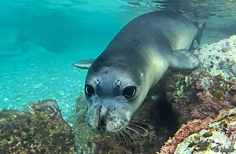
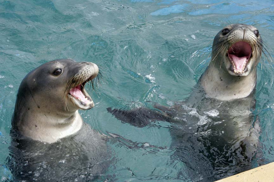
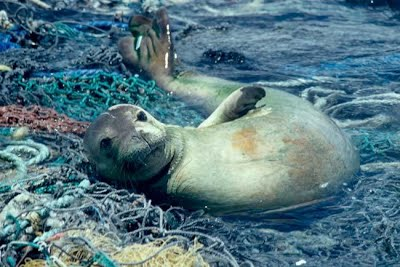

What is a Mediterranean Monk Seal?

Known often as a "living fossil", the Mediterranean Monk Seal dates as far back as 15 million years. Sadly, it is one of the many species that is endangered and not enough is being done about this problem. Once heavily present in the Mediterranean and a similar species in the Indian Ocean and off the coasts of Hawaii, the Mediterranean Monk Seal now survives in low numbers.
Causes of Extinction
Like any other animal going extinct, the Mediterranean Monk Seal shares some of the same reasons for extinction. Some things are: hunting, pollution, and disturbance by humans. In reference to pollution, the biggest culprit of this is human waste. One article even says, "Even after an 18 year clean up effort, still only 30% of the Mediterranean Monk Seal's coastal towns and cities had sewage treatment plants by 1993." People today do not realize that the small actions they do on a day to day basis affect the lives and longevity of creatures like these. Outside of waste, humans are also disturbing the general environment. These seals are naturally very shy creatures but with more humans invading their homes, they grow frightened. There is an increase in boat traffic, overfishing, and beach use. This causes them to not come to shore as much for fear of the humans and they stay far away making it harder for them to hunt their prey. Humans also set up net fisheries to catch other types of fish for selling, but in reality some of them injure or drown monk seals, causing a dramatic drop in the population.
  